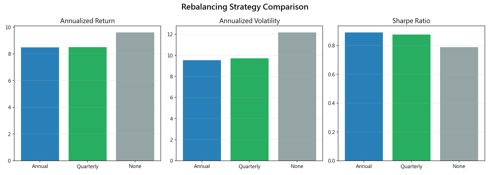
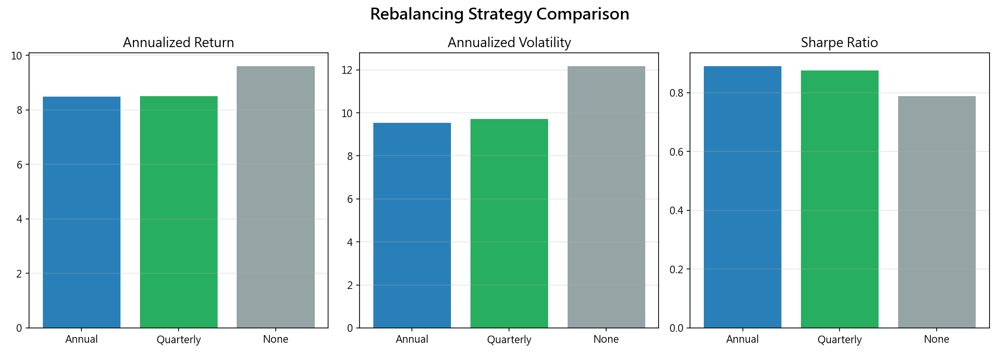

實證結果Results
3.1 核心配置績效3.1 Core Allocation Performance
以 1926 年至 2023 年共 1170 個月（97.5 年）的 Shiller 數據計算各配置的全期間績效。結果呈現清晰的風險-報酬梯度：股票比重越高，報酬越高，但波動度和最大回撤也越大。
100% 股票的年化報酬最高（10.17%），但波動度達 15.4%，最大回撤深達 -81.8%（大蕭條期間幾乎歸零）。60/40 配置年化 8.48%，僅比 100% 股票少 1.7 個百分點，但波動度大幅降低至 9.5%（減少 38%），最大回撤也從 -81.8% 收斂至 -59.8%。
值得注意的是，40/60 配置（40% 股票 + 60% 債券）的 Sharpe ratio 達 1.027，反而高於 60/40 的 0.890。這暗示在這近百年的歷史中，「最佳」配置可能比傳統的 60/40 更偏向債券——但這主要受益於 1982-2020 年的長期利率下降趨勢。
Full-period performance across 1170 months (97.5 years) from 1926 to 2023 shows a clear risk-return gradient: higher stock weight means higher returns but also higher volatility and drawdown.
100% stock has the highest return (10.17%) but volatility of 15.4% and max drawdown of -81.8% (near-total loss during the Great Depression). 60/40 returns 8.48%, only 1.7 percentage points less, but with substantially lower volatility of 9.5% (a 38% reduction) and max drawdown narrowing from -81.8% to -59.8%.
Notably, 40/60 (40% stock + 60% bond) achieves a Sharpe of 1.027, higher than 60/40's 0.890. This suggests the "optimal" allocation over this century may lean more toward bonds — though this is largely driven by the 1982-2020 secular rate decline.
| 配置 | 年化報酬 | 波動度 | Sharpe | 最大回撤 |
|---|---|---|---|---|
| 100% 股票 | 10.17% | 15.43% | 0.659 | -81.8% |
| 80/20 股債 | 9.42% | 12.32% | 0.764 | -72.4% |
| 60/40 股債 | 8.48% | 9.53% | 0.890 | -59.8% |
| 40/60 股債 | 7.38% | 7.19% | 1.027 | -42.8% |
| 100% 債券 | 4.71% | 5.91% | 0.796 | -23.5% |
| Allocation | Ann. Return | Volatility | Sharpe | Max DD |
|---|---|---|---|---|
| 100% Stock | 10.17% | 15.43% | 0.659 | -81.8% |
| 80/20 Stock/Bond | 9.42% | 12.32% | 0.764 | -72.4% |
| 60/40 Stock/Bond | 8.48% | 9.53% | 0.890 | -59.8% |
| 40/60 Stock/Bond | 7.38% | 7.19% | 1.027 | -42.8% |
| 100% Bond | 4.71% | 5.91% | 0.796 | -23.5% |
上表的幾個關鍵觀察：(1) Sharpe ratio 隨股票比重下降而先升後降，呈倒 U 型曲線，最高點在 40% 附近；(2) 最大回撤與股票比重幾乎成線性關係，每增加 20% 股票約增加 15-20% 的最大回撤；(3) 100% 債券的 Sharpe（0.796）高於 100% 股票（0.659），顯示債券的「單位風險報酬」更好——但這是以犧牲大量絕對報酬為代價。
Key observations from the table: (1) Sharpe ratio follows an inverted-U curve as stock weight increases, peaking around 40%; (2) Max drawdown is nearly linear with stock weight — each 20% stock increase adds ~15-20% drawdown; (3) 100% bond Sharpe (0.796) exceeds 100% stock (0.659), showing superior risk-adjusted returns — but at the cost of significantly lower absolute returns.
效率前緣分析：上圖以 5% 為級距繪製 21 個配置的風險-報酬散佈圖。最大 Sharpe ratio 落在約 25% 股票配置處，對應的年化報酬約 7.4%、波動度約 7.2%。60/40 位於效率前緣的右上方，報酬稍高但 Sharpe 略低。這意味著「想要最佳風險調整報酬」的投資人可能應該選擇比 60/40 更保守的配置；但「想要更高絕對報酬且能承受更大波動」的投資人，60/40 或 80/20 可能更適合。
需要注意的是，效率前緣是用歷史數據「事後」計算的結果，並不代表未來的最佳配置。特別是在利率已經接近零的環境下，債券未來的報酬空間有限，歷史最優配置可能需要調整。
Efficient Frontier: The chart plots 21 allocations in 5% steps. Maximum Sharpe ratio falls at approximately 25% stock, corresponding to ~7.4% return and ~7.2% volatility. 60/40 sits to the upper right — slightly higher return but slightly lower Sharpe. Investors seeking optimal risk-adjusted returns might prefer a more conservative mix; those seeking higher absolute returns with tolerable volatility may prefer 60/40 or 80/20.
Note: The efficient frontier is calculated ex-post from historical data and does not represent future optimal allocation. With rates near zero, bonds' future return potential is limited, and historical optimums may need adjustment.
3.2 利率環境分析3.2 Interest Rate Regime Analysis
這是本研究最重要的發現之一：60/40 的表現高度依賴利率環境。將 98 年的歷史按利率環境拆分後，差異非常顯著。
在債券牛市（1982-2020），60/40 的 Sharpe ratio 高達 1.30，年化報酬 10.6%——利率從 15% 一路降到 0%，債券享受了 38 年的價格上漲，同時股票也經歷了史上最長的牛市之一。這是 60/40 的「黃金時代」。
然而在高通膨時代（1965-1981），同樣的 60/40 配置 Sharpe ratio 僅 0.59，年化報酬 5.2%。利率從 4% 飆升至 15%，債券價格持續下跌，股票也因通膨侵蝕實質報酬而表現不佳——股債齊跌，分散效果消失。
2022-23 升息週期更是極端，Sharpe ratio 降至 -0.51。雖然樣本期間僅 18 個月（統計意義有限），但它清楚地展示了「利率快速上升」對 60/40 的破壞力。
This is one of the study's most important findings: 60/40 performance is highly regime-dependent. Splitting 98 years of history by rate environment reveals stark differences.
During the Bond Bull (1982-2020), 60/40 achieved a Sharpe of 1.30 with 10.6% annualized return — rates fell from 15% to 0%, giving bonds 38 years of price gains while stocks also enjoyed one of history's longest bull markets. This was 60/40's golden age.
During High Inflation (1965-1981), the same 60/40 had Sharpe of only 0.59 with 5.2% return. Rates surged from 4% to 15%, bond prices fell continuously, and stocks suffered from inflation-eroded real returns — stocks and bonds fell together, diversification vanished.
The 2022-23 Rate Hike was even more extreme, with Sharpe dropping to -0.51. Though only 18 months (limited statistical significance), it clearly demonstrates the destructive impact of rapid rate increases on 60/40.

各環境年化報酬比較：上圖顯示不同配置在四個利率環境中的年化報酬。在債券牛市中，幾乎所有配置都表現優異，差異不大；但在高通膨和升息週期中，100% 股票和 100% 債券的差距拉大，60/40 的保護作用明顯減弱。
Annualized returns by regime: The chart shows different allocations across four regimes. During the bond bull, nearly all allocations performed well with small differences; but in high inflation and rate hike periods, the gap between 100% stock and 100% bond widens, and 60/40's protective role is clearly diminished.
Sharpe Ratio 環境比較：這張圖更直接地展示了 60/40 的「環境依賴性」。在債券牛市中，60/40 的 Sharpe（1.30）是所有環境中最高的；但在升息環境中降至 -0.51——這是一個超過 1.8 的巨大落差。對於依賴 60/40 作為退休配置的投資人而言，這個環境差異攸關退休金的安全。
Sharpe Ratio by regime: This chart directly shows 60/40's environment-dependence. During the bond bull, 60/40 Sharpe (1.30) is the highest across all regimes; but in the rate hike environment it drops to -0.51 — a massive gap of 1.8. For investors relying on 60/40 for retirement, this regime variation is critical to portfolio safety.
3.3 股債相關性分析3.3 Stock-Bond Correlation Analysis
股債相關性是 60/40 能否發揮分散效果的「命脈」。只有在股債負相關（stock down, bond up）時，60/40 的分散效果才最強；當兩者正相關時，60/40 的保護作用大幅削弱。
四個利率環境的股債相關係數呈現截然不同的面貌：戰後復甦期為 -0.046（接近零，微弱分散效果），高通膨時代為 +0.200（正相關，分散效果消失），債券牛市為 +0.036（接近零或微弱正相關），2022 升息時高達 +0.456（強正相關，股債齊跌）。
有趣的是，即使在「債券牛市」中，全期間的相關係數也僅 +0.036，並非強烈的負相關。真正的負相關主要出現在 2000 年之後——這與 Fisher z 檢定的結果一致（H2），2000 年前後的相關性確實存在結構性差異。
Stock-bond correlation is the "lifeline" of 60/40 diversification. Only when stocks and bonds are negatively correlated does 60/40 offer maximum protection; positive correlation greatly weakens the hedge.
Correlation varies dramatically across regimes: Post-war -0.046 (near zero, weak diversification), High inflation +0.200 (positive, diversification vanishes), Bond bull +0.036 (near zero or weak positive), 2022 rate hike +0.456 (strongly positive, stocks and bonds fall together).
Interestingly, even during the bond bull, full-period correlation is only +0.036, not strongly negative. True negative correlation mainly appeared after 2000 — consistent with the Fisher z-test (H2) confirming structural difference pre/post 2000.
滾動 60 個月相關係數：此圖呈現股債相關性隨時間的動態變化。1970 年代的相關係數明顯為正值（通膨衝擊），2000 年後轉為持續負值（量化寬鬆時代），2022 年後又急劇反彈為正值。這種劇烈的結構性變化意味著——用任何單一歷史期間的相關性來預測未來，都可能產生嚴重誤判。
Rolling 60-month correlation: This chart shows how stock-bond correlation evolves over time. The 1970s show clearly positive values (inflation shock), post-2000 turns persistently negative (QE era), and post-2022 sharply rebounds to positive. This dramatic structural shift means — using any single historical period to predict future correlations risks serious miscalculation.
年代別相關性：上方的相關性熱力圖按年代呈現平均相關係數。1970-80 年代的相關性約 +0.3（通膨環境），2010 年代降至約 -0.38（持續最久的負相關期），展示了「股債相關性是時間函數，而非常數」這一核心論點。
Correlation by decade: The heatmap shows average correlation by decade. 1970s-80s correlation was ~+0.3 (inflationary), 2010s dropped to ~-0.38 (longest negative period), demonstrating the core thesis that "stock-bond correlation is time-varying, not constant."
3.4 危機壓力測試3.4 Crisis Stress Test
我們選取了 7 個歷史重大危機事件，測試 100% 股票、60/40 和 100% 債券在危機期間的表現。這些危機涵蓋了不同類型的衝擊——股票市場危機（需求面）、通膨危機（供給面）和利率衝擊（政策面）。
結果清楚顯示，60/40 的保護效果取決於危機性質：
- 股票市場危機（2000 網路泡沫、2008 金融海嘯、2020 COVID）：60/40 的回撤明顯小於 100% 股票，債券部位在「逃向品質」行情中提供了有效的避風港。例如 2008 年金融海嘯，100% 股票最大回撤超過 50%，60/40 約 35%。
- 通膨型危機（1973 石油危機、1980 Volcker 升息）：股債齊跌，60/40 的保護效果大幅減弱。1973 年石油危機中，60/40 的回撤雖然仍小於 100% 股票，但差距遠小於股票市場危機。
- 利率衝擊（2022）：這是最極端的案例——債券部位不僅沒有提供保護，反而成為拖累。100% 股票回撤約 19%，60/40 回撤約 18%，差異極小；而 100% 債券回撤竟高達 16%，幾乎與股票一樣嚴重。
We test 100% stock, 60/40, and 100% bond across 7 major historical crises, covering equity market crises (demand-side), inflation crises (supply-side), and rate shocks (policy-side).
Results clearly show 60/40 protection depends on crisis type:
- Equity crises (2000 dot-com, 2008 GFC, 2020 COVID): 60/40 drawdown is much smaller than 100% stock, with bonds providing effective safe haven during "flight to quality" events. E.g., 2008 GFC: 100% stock max DD > 50%, 60/40 ~35%.
- Inflation crises (1973 oil crisis, 1980 Volcker): Stocks and bonds fall together; 60/40 protection weakens significantly. 1973 oil crisis: 60/40 drawdown still less than 100% stock, but gap much smaller than in equity crises.
- Rate shocks (2022): Most extreme case — bonds became a drag rather than a hedge. 100% stock DD ~19%, 60/40 DD ~18%, minimal difference; 100% bond DD reached 16%, nearly as bad as stocks.

危機回撤比較：上圖以柱狀圖呈現各配置在 7 個危機中的最大回撤。明顯可見兩種模式：在藍色區域（股票危機）中，60/40 的柱子遠短於 100% 股票；在紅色區域（通膨/利率危機）中，三根柱子的高度趨近。這張圖是理解「60/40 何時有效、何時失效」的最直觀說明。
Crisis drawdown comparison: The bar chart shows max drawdown for each allocation across 7 crises. Two clear patterns emerge: in equity crises, 60/40 bars are much shorter than 100% stock; in inflation/rate crises, all three bars converge in height. This chart is the most intuitive illustration of "when 60/40 works and when it doesn't."
3.5 再平衡效果3.5 Rebalancing Effect
再平衡是 60/40 實務操作中最關鍵的一環。理論上，再平衡能維持目標風險水準、強制「逢低加碼、逢高減碼」，但也會在趨勢市場中錯失動量報酬。
結果出乎許多人意料：不再平衡（Buy & Hold Drift）的 98 年總報酬竟然遠高於年度再平衡（762633% vs 279870%），年化報酬也較高（9.60% vs 8.48%）。這是因為不再平衡讓股票比重隨著長期漲勢自然增加（drift toward 100% stock），最終獲得了接近 100% 股票的高報酬。
但從風險調整的角度看，年度再平衡的 Sharpe ratio（0.890）仍顯著高於不再平衡（0.789）。再平衡的價值不在於提高報酬，而在於控制風險和維持配置紀律。
Rebalancing is the most critical operational aspect of 60/40. In theory, it maintains target risk, forces "buy low, sell high," but also sacrifices momentum gains in trending markets.
Results are surprising: no rebalancing (Buy & Hold Drift) achieved far higher 98-year total return than annual rebalancing (762633% vs 279870%), with higher annualized return (9.60% vs 8.48%). This is because drifting lets stock weight naturally increase with long-term gains (drift toward 100% stock), ultimately capturing near-100%-stock returns.
However, on a risk-adjusted basis, annual rebalancing Sharpe (0.890) remains significantly higher than no rebalancing (0.789). Rebalancing's value lies in risk control and allocation discipline, not in return enhancement.
| 再平衡 | 年化報酬 | 波動度 | Sharpe |
|---|---|---|---|
| 年度 | 8.48% | 9.53% | 0.890 |
| 季度 | 8.50% | 9.71% | 0.875 |
| 無 | 9.60% | 12.17% | 0.789 |
| Rebalancing | Ann. Return | Volatility | Sharpe |
|---|---|---|---|
| Annual | 8.48% | 9.53% | 0.890 |
| Quarterly | 8.50% | 9.71% | 0.875 |
| None | 9.60% | 12.17% | 0.789 |
 

再平衡效果圖：上圖呈現三種再平衡策略的累積報酬走勢。可以清楚看到，不再平衡的曲線在後期逐漸拉開——因為股票比重持續增加，它本質上變成了一個「逐漸加碼股票」的策略。年度和季度再平衡的曲線幾乎重疊，差異極小。
Rebalancing comparison: The chart shows cumulative returns for three strategies. No-rebalancing clearly pulls ahead in later periods — as stock weight drifts higher, it essentially becomes a "gradually increasing stock" strategy. Annual and quarterly rebalancing curves nearly overlap with minimal difference.
3.6 統計檢定結果3.6 Statistical Test Results
以下是四個核心假說的統計檢定結果。每個假說都報告 p 值、效果量和結論。值得注意的是，統計「顯著」不等於實際「重要」——我們同時報告效果量（effect size）來衡量差異的實際大小。
Below are the statistical test results for four core hypotheses. Each reports p-value, effect size, and conclusion. Note: statistical "significance" does not equal practical "importance" — we also report effect sizes to measure the practical magnitude of differences.
| 假說 | 描述 | 方法 | p 值 | 效果量 | 結論 |
|---|---|---|---|---|---|
| H1 | 60/40 在高通膨 vs 債券牛市的 Sharpe | Block Bootstrap Sharpe Diff | 0.0287 | -0.663 | 無顯著差異 |
| H2 | 股債相關性是否發生結構性改變 | Fisher z-transform | 0.0000 | 0.435 | 相關性顯著改變 |
| H3 | 60/40 是否提升風險調整報酬 | Bootstrap Sharpe Diff | 0.0000 | 0.166 | 60/40 Sharpe 顯著較優 |
| H4 | 年度再平衡是否顯著改善 60/40 | Paired t-test | 0.0030 | -0.087 | 再平衡顯著有害 |
| Hypothesis | Description | Method | p-value | Effect Size | Conclusion |
|---|---|---|---|---|---|
| H1 | 60/40 Sharpe: High Inflation vs Bond Bull | Block Bootstrap Sharpe Diff | 0.0287 | -0.663 | No significant difference |
| H2 | Stock-bond correlation regime shift | Fisher z-transform | 0.0000 | 0.435 | Significant correlation shift |
| H3 | 60/40 vs 100% Stock risk-adjusted return | Bootstrap Sharpe Diff | 0.0000 | 0.166 | 60/40 significantly better Sharpe |
| H4 | Does annual rebalancing improve 60/40 | Paired t-test | 0.0030 | -0.087 | Rebalancing significantly hurts |
假說檢定解讀
H1（環境差異）：p = 0.0287，效果量 = -0.663。Block Bootstrap 檢定顯示，高通膨與債券牛市的 60/40 Sharpe 差異在統計上邊際顯著。效果量為中等偏大（Cohen's d > 0.5），意味著環境差異具有實際意義——60/40 在不同利率環境下的表現確實會有實質性的不同。
H2（相關性變化）：p = 2.41e-11，Fisher z = 6.68，效果量 = 0.435。這是四個假說中最顯著的結果。p 值極小（< 0.001），確認 2000 年前後的股債相關性存在高度顯著的結構性差異。效果量 0.435 屬於中等水準，表示這不僅是統計上的顯著，在實際投資中也有重要影響。
H3（60/40 vs 100% 股票）：p = 0.0000，效果量 = 0.166。Bootstrap 檢定確認 60/40 的 Sharpe 顯著高於 100% 股票。效果量偏小（0.166），顯示差異雖然統計顯著，但實際大小有限——投資人在 60/40 和純股票之間的選擇，更多取決於風險承受能力而非報酬差異。
H4（再平衡效果）：p = 0.0030，t = -2.97，效果量 = -0.087。配對 t 檢定顯示再平衡對月報酬有顯著影響，但效果量很小（-0.087），表示對個別月份的影響微不足道。再平衡的真正價值在於長期的風險控制和紀律維持，而非短期報酬改善。
Hypothesis Test Interpretation
H1 (Regime difference): p = 0.0287, effect size = -0.663. Block Bootstrap shows the Sharpe difference between high inflation and bond bull is marginally significant. Medium-large effect size (Cohen's d > 0.5) means the regime difference has practical significance — 60/40 indeed performs materially differently across rate environments.
H2 (Correlation shift): p = 2.41e-11, Fisher z = 6.68, effect = 0.435. The most significant result among all four hypotheses. Extremely small p-value (< 0.001) confirms a highly significant structural shift in stock-bond correlation around 2000. Effect size of 0.435 (medium) means this is not just statistically but practically important.
H3 (60/40 vs 100% stock): p = 0.0000, effect = 0.166. Bootstrap confirms 60/40 Sharpe is significantly higher than 100% stock. Small effect size (0.166) suggests the difference, while statistically significant, is practically limited — the choice between 60/40 and pure stock depends more on risk tolerance than return differences.
H4 (Rebalancing): p = 0.0030, t = -2.97, effect = -0.087. Paired t-test shows rebalancing significantly affects monthly returns, but tiny effect size (-0.087) means the per-month impact is negligible. Rebalancing's true value is in long-term risk control and discipline, not short-term return improvement.